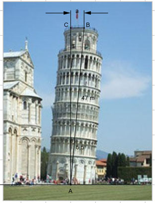

Aufgabe 68 Der Turm ist 47 m hoch und steht schief. Er weicht um 5,5° von der Senkrechten ab. Wie groß ist der Abstand a an der Spitze?  Im Dreieck ABC: a sin 5,5°= ------- |*47 m 47 m a = 47 m * sin 5,5° = 47 m * 0,0958 = 4,5 m
Aufgabe 68 Der Turm ist 47 m hoch und steht schief. Er weicht um 5,5° von der Senkrechten ab. Wie groß ist der Abstand a an der Spitze?
